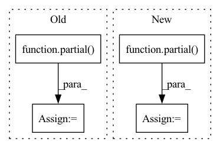

Pattern ID :36168
Before Change
// astred and cross
print("ADDING CROSS AND ASTRED")
partial_func = partial( process_astred_cross, method)
// dirty looking way of fast processing
// as taken from https://stackoverflow.com/a/60056244/1150683
row_list = df.progress_apply(partial_func, axis=1)After Change
if args.j > 1:
splits = np.array_split(df, args.splits)
partial_func = partial( mapable_df_process, gpu_partial_process)
with Pool(processes=cargs.j) as pool:
row_list = pd.concat(tqdm(pool.imap(partial_func, splits),
total=args.splits,
unit="split"))In pattern: SUPERPATTERN
Frequency: 5
Non-data size: 4
Instances Fragment ID: 102539677
Project Name: bramvanroy/astred
Commit Name: 8893b5c8514d739d55727a28ec1c1cb2ddcf033a
Time: 2020-03-02
Author: Bram.Vanroy@UGent.be
File Name: add_info_to_df.py
M Class Name: AnonimousClass
N Class Name: AnonimousClass
M Method Name: main(1)
N Method Name: main(3)
M Parent Class:
N Parent Class:
M File Name: add_info_to_df.py
N File Name: add_info_to_df.py
M Start Line: 51
M End Line: 75
N Start Line: 71
N End Line: 95
Before Change
// JIT layers
space_to_depth = SpaceToDepthModule()
anti_alias_layer = partial( AntiAliasDownsampleLayer, remove_aa_jit=remove_aa_jit)
global_pool_layer = FastGlobalAvgPool2d(flatten=True)
// TResnet stages
self.inplanes = int(64 * width_factor)After Change
// JIT layers
space_to_depth = SpaceToDepthModule()
anti_alias_layer = partial( AntiAliasDownsampleLayer, no_jit=no_aa_jit)
// TResnet stages
self.inplanes = int(64 * width_factor)
self.planes = int(64 * width_factor) Fragment ID: 102539688
Project Name: feng-lab/pytorch-image-models
Commit Name: 0004f37d25d59622ae82b3b9cc3583ddacff97c9
Time: 2020-04-27
Author: rwightman@gmail.com
File Name: timm/models/tresnet.py
M Class Name: TResNet
N Class Name: TResNet
M Method Name: __init__(8)
N Method Name: __init__(6)
M Parent Class: nn.Module
N Parent Class: nn.Module
M File Name: timm/models/tresnet.py
N File Name: timm/models/tresnet.py
M Start Line: 181
M End Line: 217
N Start Line: 195
N End Line: 234
Before Change
self.ups = nn.ModuleList([])
num_resolutions = len(in_out)
conv_next = partial( ConvNextBlock, time_emb_dim = time_dim)
for ind, (dim_in, dim_out) in enumerate(in_out):
is_last = ind >= (num_resolutions - 1)
After Change
self.ups = nn.ModuleList([])
num_resolutions = len(in_out)
conv_next = partial( ConvNextBlock, time_emb_dim = cond_dim)
for ind, (dim_in, dim_out) in enumerate(in_out):
is_last = ind >= (num_resolutions - 1)
Fragment ID: 102539689
Project Name: lucidrains/video-diffusion-pytorch
Commit Name: 4303661251b10ebd99a44d7f1fe6f2177678b248
Time: 2022-04-13
Author: lucidrains@gmail.com
File Name: video_diffusion_pytorch/video_diffusion_pytorch.py
M Class Name: Unet3D
N Class Name: Unet3D
M Method Name: __init__(6)
N Method Name: __init__(5)
M Parent Class: nn.Module
N Parent Class: nn.Module
M File Name: video_diffusion_pytorch/video_diffusion_pytorch.py
N File Name: video_diffusion_pytorch/video_diffusion_pytorch.py
M Start Line: 241
M End Line: 241
N Start Line: 227
N End Line: 255
Before Change
rotate = partial(rotate_point, -map_raster_rotation, map_raster_size)
fov_in_pix = np.apply_along_axis(rotate, 2, fov_in_pix)
convert = partial( convert_pix_to_wgs84, map_raster_size, map_raster_bbox)
if logger is not None:
logger.debug("FoV in pix:\n{}.\n".format(fog_in_pix))
fov_in_wgs84 = np.apply_along_axis(convert, 2, fov_in_pix)
After Change
rotate = partial(rotate_point, -map_raster_rotation, map_raster_dim)
fov_in_pix = np.apply_along_axis(rotate, 2, fov_in_pix)
convert = partial( convert_pix_to_wgs84, map_raster_dim, map_raster_bbox)
if logger is not None:
logger.debug("FoV in pix:\n{}.\n".format(fov_in_pix))
fov_in_wgs84 = np.apply_along_axis(convert, 2, fov_in_pix)
Fragment ID: 102539684
Project Name: hmakelin/gisnav
Commit Name: ded646b6c495f3ffabee4138273eefbcdfa2c2d8
Time: 2021-11-02
Author: hmakelin@protonmail.com
File Name: wms_map_matching/util.py
M Class Name: AnonimousClass
N Class Name: AnonimousClass
M Method Name: convert_fov_from_pix_to_wgs84(5)
N Method Name: convert_fov_from_pix_to_wgs84(5)
M Parent Class:
N Parent Class:
M File Name: wms_map_matching/util.py
N File Name: wms_map_matching/util.py
M Start Line: 161
M End Line: 169
N Start Line: 161
N End Line: 165
Before Change
data.path = [f"/mnt/vepfs/hb/protein_small/{i}" for i in range(7)]
data.preprocess = []
if not "gcn" in spec:
data.preprocess = [partial( computeEdgeIndex, r_max=9999) ]
if "sidechain_agnostic" in spec:
data.preprocess.append(maskSpecies)
After Change
},
)
)
layer_configs.layers = [("edge_index", partial( computeEdgeIndex, r_max=8.0/data.std, criteria=criteria) )] + layer_configs.layers
model.update(layer_configs)
return config Fragment ID: 102539685
Project Name: 20171130/equivariant-nn-zoo
Commit Name: fff27788768bfc6a33f5535a6d9629a4870b3f1f
Time: 2022-07-19
Author: hangruibi@outlook.com
File Name: e3_layers/configs/config_diffusion_protein.py
M Class Name: AnonimousClass
N Class Name: AnonimousClass
M Method Name: get_config(1)
N Method Name: get_config(1)
M Parent Class:
N Parent Class:
M File Name: e3_layers/configs/config_diffusion_protein.py
N File Name: e3_layers/configs/config_diffusion_protein.py
M Start Line: 56
M End Line: 58
N Start Line: 72
N End Line: 134